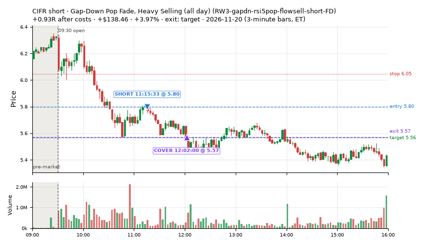
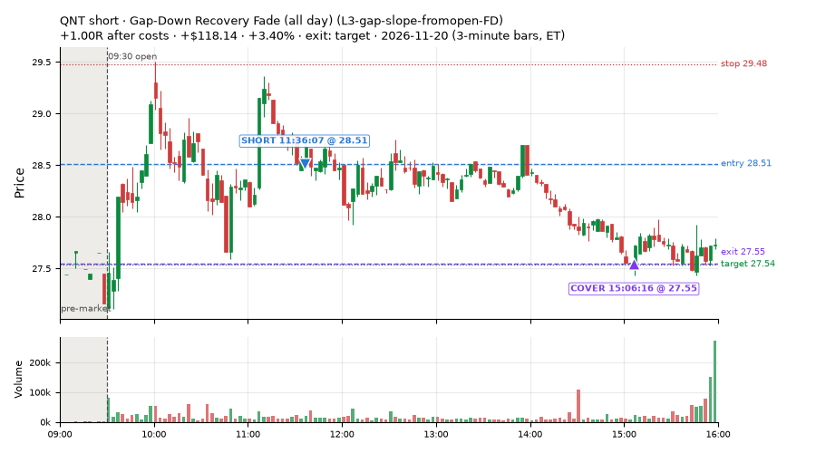
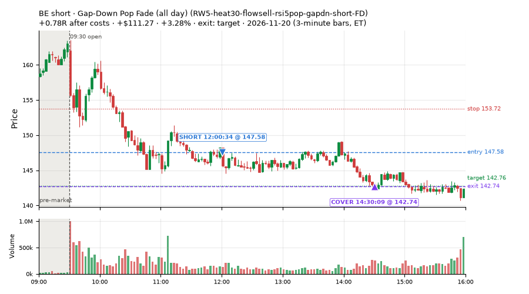
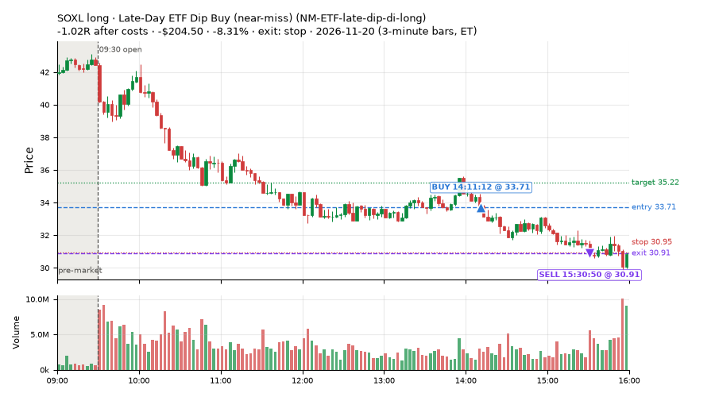
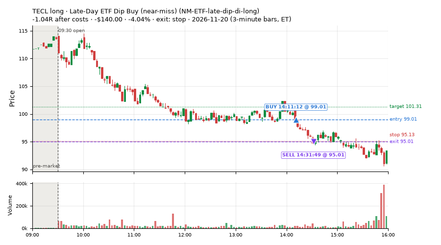
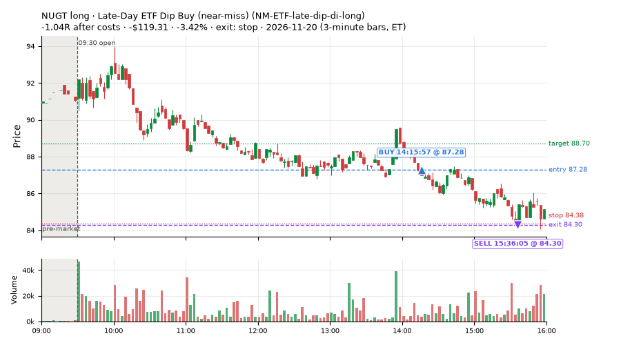
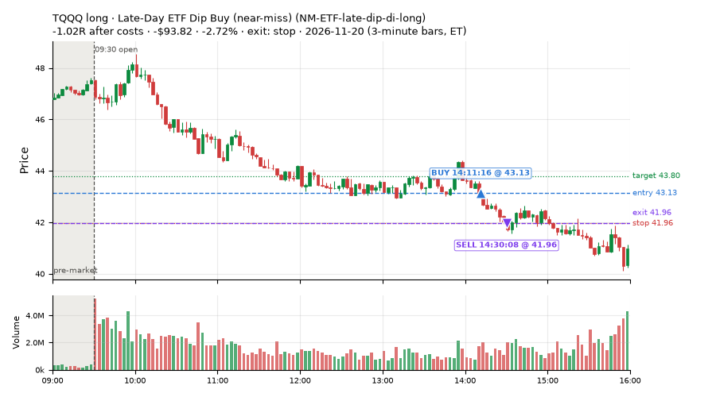
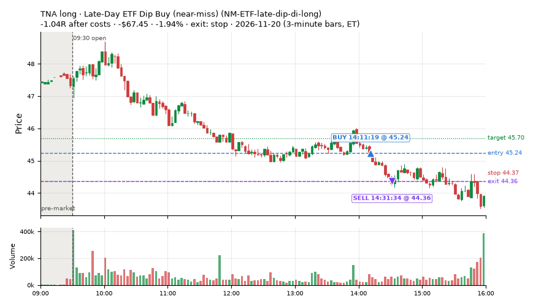

33 trades · win rate 64% · P/L $214.16
PROBATION: no live setup has passed both locked test periods. 10 owner-directed setups added 2026-10-08 (MarcoFlow top 5 + 5 new), untested live. RW6G1 (RW6 + VWAP band guard) added 2026-10-09, probation.

| Symbol | Setup | Side | In | Out | Entry | Exit | Exit reason | % gained | P/L |
|---|---|---|---|---|---|---|---|---|---|
| CIFR | Gap-Down Pop Fade, Heavy Selling (all day) (RW3-gapdn-rsi5pop-flowsell-short-FD) | short | 11:15 | 12:02 | 5.80 | 5.57 | target | +3.97% | $138.46 |
| QNT | Gap-Down Recovery Fade (all day) (L3-gap-slope-fromopen-FD) | short | 11:36 | 15:06 | 28.51 | 27.55 | target | +3.40% | $118.14 |
| BE | Gap-Down Pop Fade (all day) (RW5-heat30-flowsell-rsi5pop-gapdn-short-FD) | short | 12:00 | 14:30 | 147.58 | 142.74 | target | +3.28% | $111.27 |
| Symbol | Setup | Side | In | Out | Entry | Exit | Exit reason | % lost | P/L |
|---|---|---|---|---|---|---|---|---|---|
| SOXL | NM-ETF-late-dip-di-long | long | 14:11 | 15:30 | 33.71 | 30.91 | stop | -8.31% | $-204.50 |
| TECL | NM-ETF-late-dip-di-long | long | 14:11 | 14:31 | 99.01 | 95.01 | stop | -4.04% | $-140.00 |
| NUGT | NM-ETF-late-dip-di-long | long | 14:15 | 15:36 | 87.28 | 84.30 | stop | -3.42% | $-119.31 |
| TQQQ | NM-ETF-late-dip-di-long | long | 14:11 | 14:30 | 43.13 | 41.96 | stop | -2.72% | $-93.82 |
| TNA | NM-ETF-late-dip-di-long | long | 14:11 | 14:31 | 45.24 | 44.36 | stop | -1.94% | $-67.45 |








Signal to fill: median 2s, 90th percentile 4s (33 trades). Bars close each minute; the order follows the bar close.
Best excursion (MFE): median 0.75R; worst (MAE) median 0.64R. 36% of trades never got +0.25R in our favour; 0 reached +1R and still closed at or below 0.
| Symbol | Setup | Best R | Worst R | Closed R |
|---|---|---|---|---|
| SILJ | NM-ETF-late-dip-di-long | +0.13 | -1.08 | -1.11 |
| SMH | NM-ETF-late-dip-di-long | +0.08 | -1.05 | -1.09 |
| SPXL | NM-ETF-late-dip-di-long | +0.10 | -1.03 | -1.06 |
| GDXJ | NM-ETF-late-dip-di-long | +0.12 | -1.01 | -1.02 |
| SOXX | NM-ETF-late-dip-di-long | +0.09 | -1.06 | -1.03 |
| Entry time | Trades | Win | Avg R | P/L |
|---|---|---|---|---|
| 09:50-10:30 | 2 | 100% | +0.84 | $65.88 |
| 10:30-11:30 | 3 | 100% | +0.80 | $263.54 |
| 11:30-13:00 | 8 | 100% | +0.87 | $657.87 |
| 13:00-14:00 | 5 | 100% | +0.70 | $151.98 |
| 14:00-16:00 | 15 | 20% | -0.77 | $-925.11 |
| Setup | Trades | Win | Avg R after costs | Adj R (net of SPY) | Avg R ex-market (all sessions) | P/L |
|---|---|---|---|---|---|---|
| Gap-Down Recovery Fade (all day) (L3-gap-slope-fromopen-FD) | 7.0 | 100% | +0.86 | +0.42 | +0.00 (beta -0.64, n 188) | $541.51 |
| Late-Day ETF Dip Buy (near-miss) (NM-ETF-late-dip-di-long) | 12.0 | 0% | -1.05 | -0.65 | +0.05 (beta +1.09, n 27) | $-1,014.84 |
| Gap-Down Pop Fade, Heavy Selling (all day) (RW3-gapdn-rsi5pop-flowsell-short-FD) | 7.0 | 100% | +0.79 | -0.00 | -0.04 (beta -0.88, n 176) | $377.81 |
| Gap-Down Pop Fade (all day) (RW5-heat30-flowsell-rsi5pop-gapdn-short-FD) | 6.0 | 100% | +0.64 | -0.27 | -0.02 (beta -0.58, n 186) | $283.64 |
| RSI Collapse Dip Buy (all day) (ST7-rsi50dn-long-pm-t1s1-FD) | 1.0 | 100% | +0.23 | +0.50 | -0.03 (beta +0.48, n 43) | $26.04 |
Market direction (SPY, beta 1) accounted for $482.88 of today's $214.16; the rest ($-268.72) came from the setups themselves. Avg R net of SPY: -0.18 (incl. a hedge leg's cost; report only).
5 setups live today. Today: 94 signals, 33 taken, 1 lost because another setup held the symbol (1%). Since 2026-10-06 (34 sessions): 5887 signals, 1428 taken, 205 lost to other setups (4%). Peak open positions today 26 of 77 slots. Earnings blackout removed 180 symbols before scanning.
Simulated playing time (not live): 4432 what-if trades of signals not taken, avg +0.11R, 62% winners; of them 205 lost to another setup (avg -0.10R).
Silent: intraday_momentum · Crowded out: MF4-h40-open-flowsell, MF3-open-flowsell-rsi5hi, MF5-flowsell-vwapup-rsi5hi · Starved: MF2-open-rsimidhi-flowsell
| Prio | Setup | Today sig / taken | Sessions | Signals / taken / trades | Taken/day | Expected/day | Lost to other setups | Lost to (setup n) | Top skip reasons | SIMULATED: not-taken n / avg R / win | Verdict |
|---|---|---|---|---|---|---|---|---|---|---|---|
| 1 | Late-Day ETF Dip Buy (near-miss) NM-ETF-late-dip-di-long | 18 / 12 | 8 | 33 / 27 / 27 | 3.38 | – | 0 | – | daily loss cap 5, spread / quote / size 1 | 6 / +0.26R / 83% | ok 16.9 entries/week |
| 2 | Gap-Down Pop Fade (all day) RW5-heat30-flowsell-rsi5pop-gapdn-short-FD | 11 / 6 | 26 | 272 / 186 / 186 | 7.15 | 12.79 | 0 | – | spread / quote / size 38, daily loss cap 26, not shortable / shorts off 21 | 86 / -0.01R / 50% | ok 35.8 entries/week |
| 3 | Gap-Down Pop Fade, Heavy Selling (all day) RW3-gapdn-rsi5pop-flowsell-short-FD | 18 / 7 | 26 | 310 / 176 / 176 | 6.77 | 13.59 | 1 | CWT14-failbrk-pdl-p10-lowvol-long 1 | spread / quote / size 52, daily loss cap 42, not shortable / shorts off 39 | 134 / +0.22R / 63% | ok 33.8 entries/week |
| 4 | RSI Collapse Dip Buy (all day) ST7-rsi50dn-long-pm-t1s1-FD | 1 / 1 | 20 | 71 / 43 / 43 | 2.15 | 2.17 | 0 | – | spread / quote / size 26, daily loss cap 2 | 28 / +0.21R / 61% | slow 10.8 entries/week; ~6 weeks to 60 trades |
| 5 | Gap-Down Recovery Fade (all day) L3-gap-slope-fromopen-FD | 46 / 7 | 18 | 3292 / 188 / 188 | 10.44 | – | 66 | L3-gap-slope-fromopen-FD 66, L3-gap-slope-rsi5hi-FD 14 | not shortable / shorts off 2065, per-setup cap 648, spread / quote / size 163 | 3097 / +0.18R / 64% | ok 52.2 entries/week |
Every trade is attached as a CSV you can open and edit in Excel or Google Sheets. Live page: https://misiti15.github.io/MCF/live/